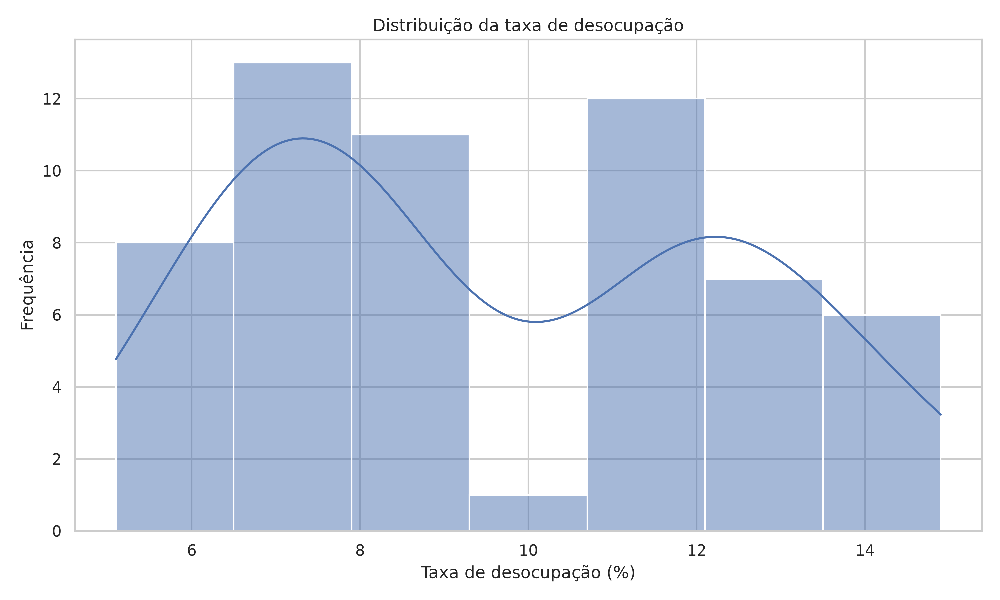

Análise da Evolução da Taxa de Desocupação no Brasil: Uma Aplicação com Dados da PNAD Contínua e Princípios FAIR
Disciplina: Análise e Visualização de Dados — 6º Período
Resumo
Este artigo apresenta uma análise exploratória da evolução da taxa de desocupação no Brasil, utilizando dados oficiais da Pesquisa Nacional por Amostra de Domicílios Contínua (PNAD Contínua), disponibilizados pelo Instituto Brasileiro de Geografia e Estatística (IBGE), por meio da plataforma SIDRA, tabela 4099. O estudo contempla 58 observações trimestrais, abrangendo o período do primeiro trimestre de 2012 ao segundo trimestre de 2026. O desenvolvimento foi realizado em Python, com um pipeline de coleta, armazenamento e tratamento dos dados, utilizando as bibliotecas Pandas e Requests. A análise exploratória empregou estatísticas descritivas e visualizações construídas com Matplotlib e Seaborn. Os resultados indicaram média geral de 9,57% e desvio padrão de 2,87 pontos percentuais. A maior taxa observada foi de 14,9%, no terceiro trimestre de 2020, enquanto a menor foi de 5,1%, no quarto trimestre de 2025. A série evidencia elevação da desocupação em períodos de crise e redução nos anos mais recentes. O projeto também organiza código, dados e metadados com o objetivo de favorecer a reprodutibilidade e a aplicação dos princípios FAIR.
1. Introdução
O mercado de trabalho é um importante indicador das condições econômicas e sociais de um país. Entre os indicadores utilizados para acompanhar sua situação, destaca-se a taxa de desocupação, que representa a proporção de pessoas desocupadas em relação à força de trabalho.
No Brasil, o Instituto Brasileiro de Geografia e Estatística (IBGE), por meio da Pesquisa Nacional por Amostra de Domicílios Contínua (PNAD Contínua), disponibiliza informações periódicas sobre o mercado de trabalho. Esses dados permitem acompanhar mudanças na ocupação e na desocupação ao longo do tempo.
A disponibilidade de dados públicos possibilita a realização de estudos quantitativos e análises reproduzíveis. Entretanto, para que essas informações sejam utilizadas de maneira consistente, é necessário realizar procedimentos de coleta, organização, tratamento e visualização dos dados.
Nesse contexto, este trabalho tem como objetivo analisar a evolução da taxa de desocupação no Brasil, utilizando dados trimestrais da PNAD Contínua, disponibilizados na plataforma SIDRA do IBGE, tabela 4099.
Para orientar a investigação, foram definidas três questões de pesquisa:
- Como a taxa de desocupação brasileira evoluiu ao longo do período analisado?
- Quais diferenças podem ser observadas nas médias anuais da taxa de desocupação?
- Qual é a distribuição dos valores observados e quais foram os períodos de maior e menor desocupação?
2. Metodologia e Pipeline de Dados
2.1 Fonte e obtenção dos dados
Os dados utilizados foram obtidos por meio da API do Sistema IBGE de Recuperação Automática (SIDRA), referente à tabela 4099, que apresenta informações da PNAD Contínua sobre a taxa de desocupação no Brasil.
A consulta contempla a abrangência nacional e os períodos trimestrais disponíveis na série utilizada. Os dados originais são armazenados em formato JSON, preservando o conteúdo retornado pela fonte oficial.
2.2 Tecnologias utilizadas
O desenvolvimento foi realizado utilizando a linguagem Python e as seguintes bibliotecas:
- Pandas: organização e tratamento dos dados;
- Requests: comunicação com a API do IBGE;
- Matplotlib: elaboração de gráficos;
- Seaborn: visualizações estatísticas;
- Jupyter Notebook: execução da análise exploratória.
2.3 Etapas do pipeline
O processo de engenharia de dados foi organizado em etapas sequenciais:
- Coleta: consulta aos dados da tabela 4099 por meio da API SIDRA.
-
Armazenamento bruto: gravação dos dados
originais em arquivo JSON na pasta
data/raw. - Tratamento: conversão dos dados para estrutura tabular, identificação de ano e trimestre, conversão dos valores numéricos e remoção de registros inválidos.
- Organização: criação da variável de data e ordenação cronológica dos registros.
- Armazenamento processado: exportação da base tratada em CSV compactado com gzip.
- Análise: cálculo de estatísticas descritivas e elaboração das visualizações.
2.4 Estrutura dos dados
A base processada possui quatro variáveis principais:
| Variável | Descrição | Tipo |
|---|---|---|
| data | Data de início do trimestre | Data |
| ano | Ano de referência | Inteiro |
| trimestre | Trimestre de referência (1 a 4) | Inteiro |
| taxa_desocupacao | Taxa de desocupação em percentual | Decimal |
A análise foi realizada sobre 58 registros trimestrais, compreendendo o período do primeiro trimestre de 2012 ao segundo trimestre de 2026.
3. Resultados e Discussão Visual
3.1 Estatísticas descritivas
A análise descritiva permitiu identificar as características gerais da série histórica. Considerando os 58 registros, a taxa de desocupação apresentou média de 9,57%, mediana de 8,75% e desvio padrão de aproximadamente 2,87 pontos percentuais.
| Indicador | Resultado |
|---|---|
| Quantidade de registros | 58 |
| Média | 9,57% |
| Mediana | 8,75% |
| Desvio padrão | 2,87 |
| Menor taxa | 5,1% |
| Maior taxa | 14,9% |
3.2 Evolução histórica da taxa de desocupação
A Figura 1 apresenta a evolução trimestral da taxa de desocupação no Brasil. A visualização permite observar períodos de elevação e redução do indicador ao longo da série histórica.

Observa-se uma elevação expressiva da desocupação a partir de 2015, seguida de um período de taxas elevadas. O maior valor da série foi de 14,9%, registrado no terceiro trimestre de 2020. Nos períodos posteriores, verifica-se uma trajetória de redução, especialmente a partir de 2022.
3.3 Comparação das médias anuais
A Figura 2 apresenta as médias anuais da taxa de desocupação. Essa comparação permite identificar diferenças entre os anos e observar mudanças no comportamento do indicador.

As médias anuais indicam crescimento da desocupação entre 2015 e 2017, período em que o indicador atingiu patamares elevados. Em 2020, a média anual chegou a aproximadamente 13,78%. A partir de 2022, observa-se uma redução progressiva, alcançando média de aproximadamente 5,88% em 2025.
O maior aumento da média anual ocorreu entre 2015 e 2016, com aproximadamente 2,97 pontos percentuais. A maior redução ocorreu entre 2021 e 2022, com queda de aproximadamente 3,97 pontos percentuais.
3.4 Distribuição das taxas
A Figura 3 apresenta a distribuição dos valores da taxa de desocupação observados durante o período analisado. O histograma permite visualizar a concentração das observações em diferentes faixas do indicador.

A distribuição evidencia a ocorrência de valores em diferentes níveis de desocupação, refletindo as mudanças observadas na série histórica. A presença de taxas mais elevadas está relacionada aos períodos de maior pressão sobre o mercado de trabalho.
4. Conclusão
O estudo permitiu analisar a evolução da taxa de desocupação no Brasil por meio de dados oficiais da PNAD Contínua, disponibilizados pelo IBGE. A análise de 58 observações trimestrais demonstrou mudanças significativas no indicador ao longo do período estudado.
Os resultados identificaram a maior taxa de desocupação de 14,9% no terceiro trimestre de 2020 e a menor taxa de 5,1% no quarto trimestre de 2025. Também foi possível observar a elevação das médias anuais em determinados períodos e a redução progressiva registrada nos anos mais recentes.
A utilização de Python possibilitou automatizar a coleta, o tratamento e a análise dos dados, além de produzir visualizações que facilitaram a interpretação dos resultados.
Conclui-se que o pipeline desenvolvido contribui para a organização e a reprodutibilidade do estudo, demonstrando a importância da utilização de dados públicos e de procedimentos documentados em projetos de análise de dados.
5. Disponibilidade dos Dados e Princípios FAIR
5.1 Disponibilidade dos dados e código
O código-fonte, os dados coletados, os dados processados, o notebook de análise e a documentação estão organizados no repositório público do GitHub:
https://github.com/felipebarbosa-ai/analise-desemprego-brasil
5.2 Declaração de aderência aos princípios FAIR
- Findable (Localizável): o projeto possui repositório identificado, README descritivo e dicionário de dados com informações sobre a origem e a estrutura dos arquivos.
- Accessible (Acessível): o código e os arquivos disponibilizados podem ser acessados publicamente pelo repositório GitHub.
- Interoperable (Interoperável): os dados são armazenados em formatos amplamente utilizados, como JSON e CSV, acompanhados de documentação em Markdown.
- Reusable (Reutilizável): o projeto disponibiliza scripts, notebook, documentação e dependências com versões especificadas, facilitando a reprodução e a reutilização da análise.
O código-fonte está disponibilizado sob a licença MIT. Os dados de origem são atribuídos ao IBGE, respeitando a identificação da instituição responsável por sua produção e divulgação.
6. Referências
- INSTITUTO BRASILEIRO DE GEOGRAFIA E ESTATÍSTICA (IBGE). Indicadores: Desemprego. Disponível em: https://www.ibge.gov.br/indicadores#desemprego . Acesso em: 16 nov. 2026.
- INSTITUTO BRASILEIRO DE GEOGRAFIA E ESTATÍSTICA (IBGE). Sistema IBGE de Recuperação Automática (SIDRA): Tabela 4099. Disponível em: https://sidra.ibge.gov.br/tabela/4099 . Acesso em: 16 nov. 2026.
- WILKINSON, Mark D. et al. The FAIR Guiding Principles for scientific data management and stewardship. Scientific Data, v. 3, 2016. DOI: 10.1038/sdata.2016.18.
- MCKINNEY, Wes. Python for Data Analysis: Data Wrangling with pandas, NumPy, and Jupyter. 3. ed. O'Reilly Media, 2022.